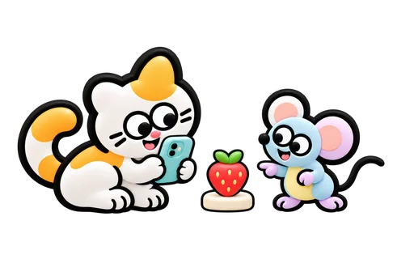
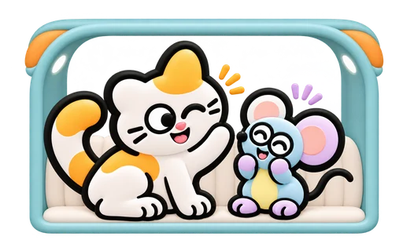
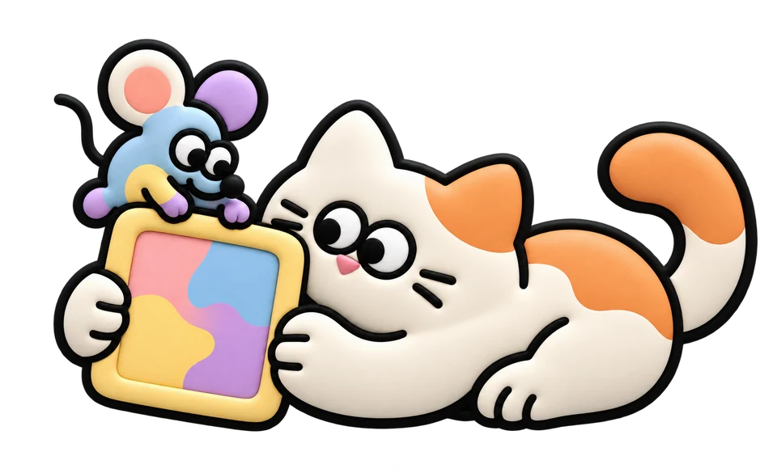

ステッカーハントで撮る
カメラでステッカーハントを選び、気になるものを撮影。切り抜きを確認してGalleryの「Sticker」に保存します。
ステッカーハントと、みんなで作るプリクラ
お気に入りを撮って切り抜こう。
作ったステッカーは、友達とのプリクラにも貼れます。
iPhoneアプリ · ただいまテスト中


カメラでステッカーハントを選び、気になるものを撮影。切り抜きを確認してGalleryの「Sticker」に保存します。

カメラ画面を右にスワイプしてPURIへ。友達とポーズを決めて撮影し、使う写真を投票で選びます。

落書きやステッカーで一緒に飾り、印刷口から完成したプリクラを受け取ります。
ステッカー機能は対応するテスト版で使えます。
今日の配信色で投稿すると、相互フレンドの今日の写真が見られます。
友達を招待して色探し。撮影が終わると、メンバー同士で写真を見られます。
プリクラを撮って、使う写真を投票で選び、一緒に落書き。印刷口から完成作品を取り出せます。
作ったステッカーを相互フレンドに配布。受け取ったステッカーはPURIなどで使えます。
翌朝に届くTodayの自動コラージュや、PURIの作品をカレンダーで振り返れます。自動コラージュには対象のギフトが入ることも。
アプリの見た目を切り替えられます。対応するテスト版では、Y2Kの枠や背景素材でコラージュを飾れます。

撮影・編集・ステッカー作り・手動コラージュはサインイン不要です。
友達と共有するにはAppleでサインインします。